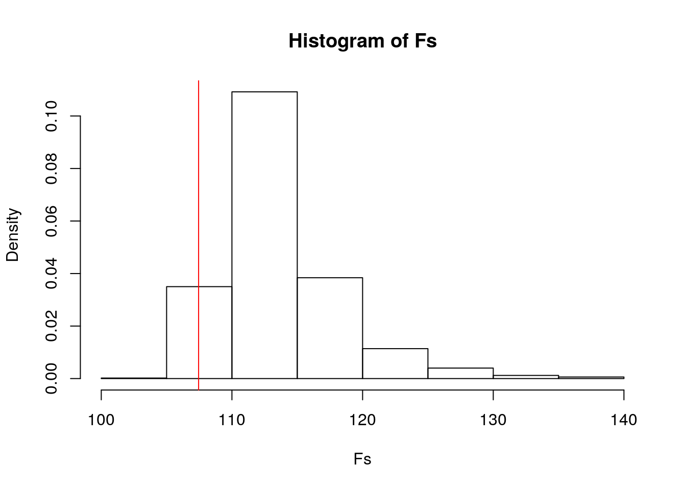
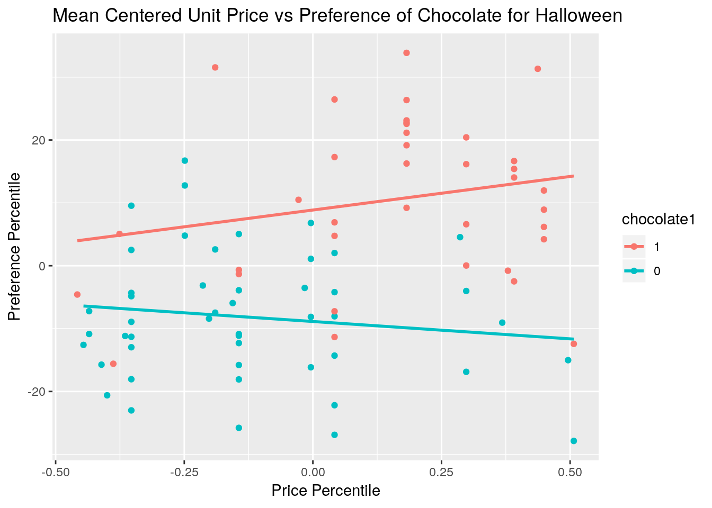
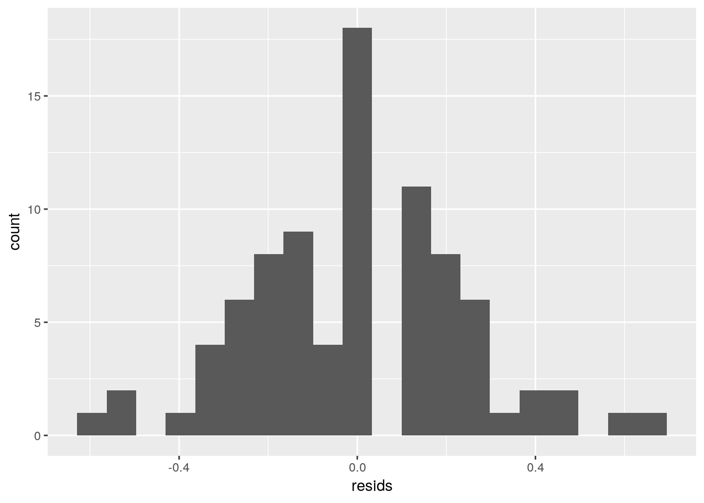
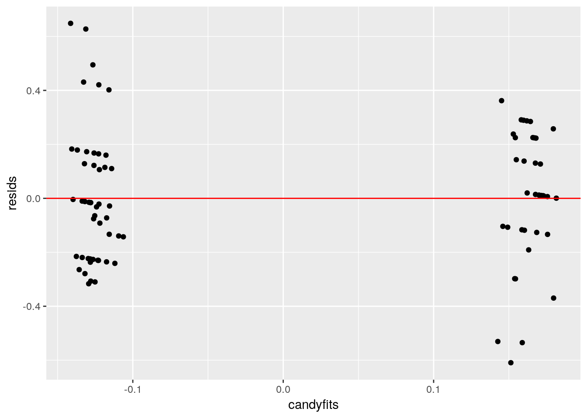
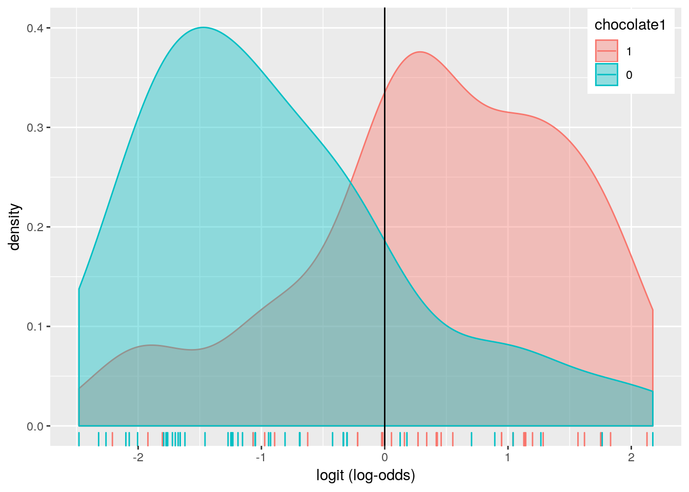
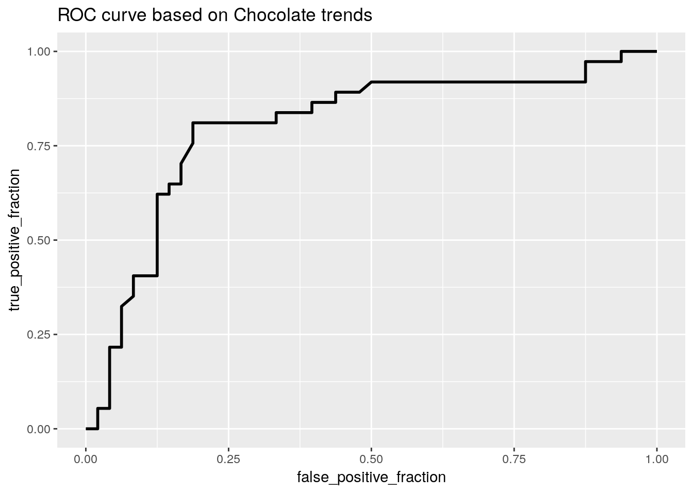

I decided to work with halloween candy data for this project since it seemed fun, it’s about what kind of candy people would like to recieve during halloween. This data set has 13 variables, most of which are categorical variables that are already sorted with 0’s and 1’s to represent if they do or don’t have the variable listed. They surveyed 85 types of candy, thus there are 85 observations. The categorical variable that I’m particularly interested in are chocolate, I might also look into some of the other categorical vaireables in addition to the main ones I’m focusing on. There are three numerical variables in this dataset, sugarpecent, which is the percentile of sugar it falls under within the data set, pricepercent, which is the unit price percentile compared to the rest of the set, and winpercent, which is the overall win percentage according to 269,000 votes. I was a little unclear on the win percent variable so I looked futher into it and figured out it was how often that particular candy was chosen as the prefered candy to recieve during halloween.
library(dplyr)
library(tidyverse)
library(ggplot2)
library(lmtest)
library(glmnet)
library(sandwich)
library(plotROC)
library(vegan)This is the halloween candy dataset that I used!
candy <- read.csv("https://raw.githubusercontent.com/fivethirtyeight/data/master/candy-power-ranking/candy-data.csv")
glimpse(candy)## Observations: 85
## Variables: 13
## $ competitorname <fct> 100 Grand, 3 Musketeers, One dime, One quarter, Air …
## $ chocolate <int> 1, 1, 0, 0, 0, 1, 1, 0, 0, 0, 1, 0, 0, 0, 0, 0, 0, 0…
## $ fruity <int> 0, 0, 0, 0, 1, 0, 0, 0, 0, 1, 0, 1, 1, 1, 1, 1, 1, 1…
## $ caramel <int> 1, 0, 0, 0, 0, 0, 1, 0, 0, 1, 0, 0, 0, 0, 0, 0, 0, 0…
## $ peanutyalmondy <int> 0, 0, 0, 0, 0, 1, 1, 1, 0, 0, 0, 0, 0, 0, 0, 0, 0, 0…
## $ nougat <int> 0, 1, 0, 0, 0, 0, 1, 0, 0, 0, 1, 0, 0, 0, 0, 0, 0, 0…
## $ crispedricewafer <int> 1, 0, 0, 0, 0, 0, 0, 0, 0, 0, 0, 0, 0, 0, 0, 0, 0, 0…
## $ hard <int> 0, 0, 0, 0, 0, 0, 0, 0, 0, 0, 0, 0, 0, 0, 1, 0, 1, 1…
## $ bar <int> 1, 1, 0, 0, 0, 1, 1, 0, 0, 0, 1, 0, 0, 0, 0, 0, 0, 0…
## $ pluribus <int> 0, 0, 0, 0, 0, 0, 0, 1, 1, 0, 0, 1, 1, 1, 0, 1, 0, 1…
## $ sugarpercent <dbl> 0.732, 0.604, 0.011, 0.011, 0.906, 0.465, 0.604, 0.3…
## $ pricepercent <dbl> 0.860, 0.511, 0.116, 0.511, 0.511, 0.767, 0.767, 0.5…
## $ winpercent <dbl> 66.97173, 67.60294, 32.26109, 46.11650, 52.34146, 50…For the MANOVA I’m checking the sugar percentage and the price percentage of the halloween candies based if the candy has chocolate in it or not.
# Creating a MANOVA variable
candyman <- manova(cbind(sugarpercent, pricepercent)~chocolate, data = candy)
summary(candyman)## Df Pillai approx F num Df den Df Pr(>F)
## chocolate 1 0.25904 14.334 2 82 4.587e-06 ***
## Residuals 83
## ---
## Signif. codes: 0 '***' 0.001 '**' 0.01 '*' 0.05 '.' 0.1 ' ' 1# Checking mean differences compared to the categorical variable
candy %>%
group_by(chocolate) %>%
summarise(mean(sugarpercent), mean(pricepercent))## # A tibble: 2 x 3
## chocolate `mean(sugarpercent)` `mean(pricepercent)`
## <int> <dbl> <dbl>
## 1 0 0.453 0.343
## 2 1 0.512 0.632# Univariate ANOVA based on the MANOVA object.
summary.aov(candyman)## Response sugarpercent :
## Df Sum Sq Mean Sq F value Pr(>F)
## chocolate 1 0.0729 0.072887 0.9105 0.3427
## Residuals 83 6.6440 0.080049
##
## Response pricepercent :
## Df Sum Sq Mean Sq F value Pr(>F)
## chocolate 1 1.7468 1.74680 28.364 8.434e-07 ***
## Residuals 83 5.1116 0.06158
## ---
## Signif. codes: 0 '***' 0.001 '**' 0.01 '*' 0.05 '.' 0.1 ' ' 1# Post-hoc t test
pairwise.t.test(candy$pricepercent, candy$chocolate, p.adj = "none")##
## Pairwise comparisons using t tests with pooled SD
##
## data: candy$pricepercent and candy$chocolate
##
## 0
## 1 8.4e-07
##
## P value adjustment method: noneMy data that I chose to perform a MANOVA with doesn’t have that big of a mean difference between the variables, but I chose to run a univariate ANOVAs just to make sure that the means really aren’t too differnt. There was at least one significant difference among the the candy being chocolate or not for at least one of the dependent variables. When the univariate ANOVA was run, the variable that had a significant differnce was the price percent variable where the p < 0.05. When the post hoc analysis was performed conducting pairwise comparisons to determine which chocolate prefernce differed in the price percent it showed me that they both differ signigicantly in terms of price percent.
I had to run a PERMANOVA as my randomization test since my original data was from an MANOVA so this was the most logical choice. For this I’m comparing the chocolate variable to the sugar and price percent depending on if the candy is chocolate or not!
# Do a PERMANOVA
sugaMoni <- candy %>%
select(sugarpercent, pricepercent) %>%
dist()
adonis(sugaMoni~chocolate, data=candy)##
## Call:
## adonis(formula = sugaMoni ~ chocolate, data = candy)
##
## Permutation: free
## Number of permutations: 999
##
## Terms added sequentially (first to last)
##
## Df SumsOfSqs MeanSqs F.Model R2 Pr(>F)
## chocolate 1 1.8197 1.81969 12.848 0.13404 0.001 ***
## Residuals 83 11.7556 0.14163 0.86596
## Total 84 13.5753 1.00000
## ---
## Signif. codes: 0 '***' 0.001 '**' 0.01 '*' 0.05 '.' 0.1 ' ' 1#compute observed F
SST <- sum(sugaMoni^2)/85
SSW <- candy%>%
group_by(chocolate)%>%
select(sugarpercent, pricepercent)%>%
do(d = dist(.[1:2],"euclidean"))%>%
ungroup()%>%
summarize(sum(d[[1]]^2)/50 +
sum(d[[2]]^2)/50)%>%
pull
F_obs<-((SST-SSW)/1)/(SSW/83) #observed F statistic
# compute null distribution for F
Fs <- replicate(1000,{
new <- candy %>%
mutate(chocolate=sample(chocolate))
SSW <- new %>%
group_by(chocolate) %>%
select(sugarpercent, pricepercent) %>%
do(d = dist(.[1:2],"euclidean")) %>%
ungroup() %>%
summarize(sum(d[[1]]^2)/50 + sum(d[[2]]^2)/50) %>%
pull
((SST-SSW)/1)/(SSW/83)
})
{hist(Fs,prob = T); abline(v=F_obs, col="red", add=T)}
# p- value
mean(Fs>F_obs)## [1] 0.973H0: mean sugar % for chocolate = mean sugar % for non chocolate = mean price % for chocolate = mean price % for non chocolate HA: at least one of these means differs from the others The results of this test shows me that I get the same conclution as my MANOVA results and we reject the null hypothesis since the p value is so small.
Using the candy data set I’m going to compare the unite price of the Halloween candy to the preference of each candy, based on if it’s chocolate or not, chosen by the people who took this survey to see if there is a linear relationship. My response variable will be the price, thus my regression will be predicting the pricePercent from the winPercent and chocolate variables.
# Mean centering the data
candy$winpercent_c <- candy$winpercent - mean(candy$winpercent)
candy$pricepercent_c <- candy$pricepercent - mean(candy$pricepercent)
# Linear model
candylm <- lm(pricepercent_c ~ winpercent_c + chocolate,
data = candy)
summary(candylm)##
## Call:
## lm(formula = pricepercent_c ~ winpercent_c + chocolate, data = candy)
##
## Residuals:
## Min 1Q Median 3Q Max
## -0.60922 -0.19107 -0.01023 0.16485 0.64847
##
## Coefficients:
## Estimate Std. Error t value Pr(>|t|)
## (Intercept) -0.1194325 0.0410060 -2.913 0.004617 **
## winpercent_c 0.0007865 0.0023988 0.328 0.743858
## chocolate 0.2743720 0.0707735 3.877 0.000212 ***
## ---
## Signif. codes: 0 '***' 0.001 '**' 0.01 '*' 0.05 '.' 0.1 ' ' 1
##
## Residual standard error: 0.2495 on 82 degrees of freedom
## Multiple R-squared: 0.2557, Adjusted R-squared: 0.2375
## F-statistic: 14.08 on 2 and 82 DF, p-value: 5.525e-06# Plotting the regression
candy$chocolate1 <-factor(candy$chocolate,
levels=c("1","0"))
candy %>%
ggplot(aes(pricepercent_c, winpercent_c)) +
geom_point(aes(color = chocolate1)) +
geom_smooth(method = "lm", se = F, aes(color=chocolate1)) +
ggtitle("Mean Centered Unit Price vs Preference of Chocolate for Halloween") +
xlab("Price Percentile") +
ylab("Preference Percentile") 
As seen in this plot above there is a lot of information being thrown around! first we can take a look at the linear regression table where it shows us that the intercept coefficient is -0.119, which lets us know that when the price point is 0 the preference of candy that people have is 0 which makes logical sense. People can’t want something if there’s nothing offered. The coefficient for win percent which is at 0.0007 basically meaning there is no increased preference of candy type based on price. On the other hand, the coefficient for chocolate was 0.27, meaning that the preference of chocolate candy’s increase the price of those chocolates also increase! It’s really interesting to see how there is a stonger preference (win percent) for chocolate as the type of candy being recieved for halloween compared to non-chocolate candy’s. We can also see that based on the particular chocolates chosen the price also increases in comparison to the other candy’s. Based on this information we can see that there is a correlation between the mean prefernece of chocolate candy and their mean cost for this halloween survey.
resids <- candylm$residuals
candyfits <- candylm$fitted.values
# Normality check with Shapiro-Wilk test
shapiro.test(resids)##
## Shapiro-Wilk normality test
##
## data: resids
## W = 0.98695, p-value = 0.5529# Histogram for normality
ggplot()+geom_histogram(aes(resids),bins=20)
# Checking variance with residual values
ggplot()+
geom_point(aes(candyfits, resids)) +
geom_hline(yintercept = 0, color = "red")
In this case the p-value from the Shapiro-Wilk is greater thatn 0.05 which would indicate that this relationship does follow normality, and this is backed up with the histogram which shows an ached bellcurve type shape, proving that this relationship is pretty normal. The residual plot allows us to see homoskedaticity which apprears as two groups which represent chocolate vs non-chocolate candy, both which are ok and follow homoskedaticity.
# Robust standard errors
bptest(candylm)##
## studentized Breusch-Pagan test
##
## data: candylm
## BP = 9.7851, df = 2, p-value = 0.007502coeftest(candylm, vcov = vcovHC(candylm))##
## t test of coefficients:
##
## Estimate Std. Error t value Pr(>|t|)
## (Intercept) -0.11943254 0.03866965 -3.0885 0.002745 **
## winpercent_c 0.00078647 0.00287763 0.2733 0.785307
## chocolate 0.27437205 0.08371439 3.2775 0.001537 **
## ---
## Signif. codes: 0 '***' 0.001 '**' 0.01 '*' 0.05 '.' 0.1 ' ' 1According to the Breusch-Pagan test normality is met since the p-value is barely over 0.05 meaning there is a significance differnce in the variables. When looking at the coefficients for the robust standard error we can tell that there is not much of a difference from the uncorrected SE values! The uncorrected values were: 0.041(intercept), 0.0024(winpercent), and 0.07(chocolate), the corrected values were:0.038(intercept), 0.0028(winpercent), and 0.08(chocolate).
Additionally, the proportion of the variation explained by the outcome from my model was 0.2375 which means that the price isn’t really explaining the variation of the win percent or chocolate regardless of significance.
# Creating a variable that repeat 5000 times
samp_distn<-replicate(5000, {
boot_candy <- sample_frac(candy, replace=T)
candylm1 <- lm(pricepercent_c~winpercent_c + chocolate1, data = boot_candy)
coef(candylm1)
})
samp_distn %>% t %>% as.data.frame %>% summarize_all(sd)## (Intercept) winpercent_c chocolate10
## 1 0.05920735 0.002754613 0.08183331The bootstrapped SE values are differnt from the roburst and original values, the intercept value for the bootstrap is 0.058 which is higher than the other two which were 0.41 and 0.38, the mean adjusted win percent is 0.0027 which is close to the roburst value which was 0.0028, and the chocolate value is basically in between the other two at 0.079.
candyfit <- glm(chocolate~sugarpercent+pricepercent,
data = candy,
family = binomial(link = "logit"))
summary(candyfit)##
## Call:
## glm(formula = chocolate ~ sugarpercent + pricepercent, family = binomial(link = "logit"),
## data = candy)
##
## Deviance Residuals:
## Min 1Q Median 3Q Max
## -2.1365 -0.7748 -0.5028 0.9536 2.1508
##
## Coefficients:
## Estimate Std. Error z value Pr(>|z|)
## (Intercept) -2.1415 0.6378 -3.358 0.000786 ***
## sugarpercent -0.6739 0.9893 -0.681 0.495764
## pricepercent 4.5583 1.1055 4.123 3.73e-05 ***
## ---
## Signif. codes: 0 '***' 0.001 '**' 0.01 '*' 0.05 '.' 0.1 ' ' 1
##
## (Dispersion parameter for binomial family taken to be 1)
##
## Null deviance: 116.407 on 84 degrees of freedom
## Residual deviance: 92.346 on 82 degrees of freedom
## AIC: 98.346
##
## Number of Fisher Scoring iterations: 4exp(coef(candyfit))## (Intercept) sugarpercent pricepercent
## 0.1174736 0.5097151 95.4229678probs <- predict(candyfit, type = "response")The coefficients of candyfit shows the log odds of the variables that are being compared to chocolate. We can take the exponentiate coeffecients to look at the odds ratios. This shows me that at the lowest sugar and price percent the odds of the candy being chocolate is at 0.117. For sugarpercent when we control the price percent, the percent increase results the odds of the candy being chocolate increase by a factor of 0.51. For pricepercent when we control the sugar percent, the percent increase results the odds of the candy being chocolate increase by a factor of 95.42.
# Confution matrix
table(truth = candy$chocolate,
prediction = as.numeric(probs> 0.5)) %>%
addmargins()## prediction
## truth 0 1 Sum
## 0 40 8 48
## 1 12 25 37
## Sum 52 33 85class_diag <- function(probs,truth){
tab <- table(factor(probs>.5,levels=c("FALSE","TRUE")),truth)
acc = sum(diag(tab))/sum(tab)
sens = tab[2,2]/colSums(tab)[2]
spec = tab[1,1]/colSums(tab)[1]
ppv = tab[2,2]/rowSums(tab)[2]
if(is.numeric(truth) == FALSE & is.logical(truth)==FALSE)
truth<-as.numeric(truth)-1
#CALCULATE EXACT AUC
ord <- order(probs, decreasing=TRUE)
probs <- probs[ord]; truth <- truth[ord]
TPR = cumsum(truth)/max(1,sum(truth))
FPR = cumsum(!truth)/max(1,sum(!truth))
dup <- c(probs[-1]>=probs[-length(probs)], FALSE)
TPR <- c(0,TPR[!dup],1); FPR<-c(0,FPR[!dup],1)
n <- length(TPR)
auc <- sum( ((TPR[-1]+TPR[-n])/2) * (FPR[-1]-FPR[-n]) )
data.frame(acc,sens,spec,ppv,auc)
}
class_diag(probs, candy$chocolate)## acc sens spec ppv auc
## 1 0.7647059 0.6756757 0.8333333 0.7575758 0.8018018The accuracy is the proportion of correctly sorted candy based on if they’re chocolate or not with a probability greated than 0.5, my accuracy was 0.76. TPR the proportion of correctly sorted candy that are not chocolates with a probability greated than 0.5, my TPR was 0.67. TNR the proportion of correctly sorted candy that are chocolates with a probability greated than 0.5, my TNR was 0.833. The recall is the proportion of candy sorted as non chocolates with a probability greated than 0.5 that that actually are! My precsion was 0.75
The coefficients
# Density plot
candy$logit <- predict(candyfit, type = "link")
candy %>%
ggplot() +
geom_density(aes(logit, color = chocolate1, fill = chocolate1), alpha=.4) +
theme(legend.position = c(.92,.90)) +
geom_vline(xintercept = 0) +
xlab("logit (log-odds)") +
geom_rug(aes(logit, color = chocolate1))
# ROC curve
candy$prob <- predict(candyfit, type = "response")
ROCplot <- ggplot(candy) +
geom_roc(aes(d = chocolate, m = prob), n.cuts=0) +
ggtitle("ROC curve based on Chocolate trends")
ROCplot
calc_auc(ROCplot)## PANEL group AUC
## 1 1 -1 0.8018018My ROC curve is pretty good, there is not too many FPR (false positives) there is a good amount of area under the curve, my AUC based on TPR and FPR is 0.802 which is a good value!
set.seed(1234)
k=10
# 10 fold process
candydat <- candy[sample(nrow(candy)), ]
folds <- cut(seq(1:nrow(candy)),
breaks = k,
labels = F)
diags <- NULL
for (i in 1:k) {
train <- candydat[folds!=i, ]
test <- candydat[folds==i, ]
truth <- test$chocolate
candyfit <- glm(chocolate~sugarpercent+pricepercent,
data = candy,
family = binomial(link = "logit"))
probs <- predict(candyfit, newdata = test, type = "response")
diags <- rbind(diags, class_diag(probs, truth))
}
summarise_all(diags, mean)## acc sens spec ppv auc
## 1 0.7680556 0.7028571 0.8390476 0.73 0.8139286After preforming the 10 fold CV the acc, sens, spec, and ppv didn’t chance much and the AUC went up by a little bit, but nothing too significant. The accurary stayed the same, the sensitivity when from 0.67 to 0.70 and the recall went from 0.76 to 0.73.
set.seed(1234)
# matix prep
y <- as.matrix(candy$chocolate1)
x <- model.matrix(chocolate1 ~ ., data = candy)[, -1]
cv <- cv.glmnet(x, y, family = "binomial")
# lasso
lasso <- glmnet(x, y, family = "binomial", lambda = cv$lambda.1se)
coef(lasso)## 101 x 1 sparse Matrix of class "dgCMatrix"
## s0
## (Intercept) -5.385813
## competitorname3 Musketeers .
## competitornameAir Heads .
## competitornameAlmond Joy .
## competitornameBaby Ruth .
## competitornameBoston Baked Beans .
## competitornameCandy Corn .
## competitornameCaramel Apple Pops .
## competitornameCharleston Chew .
## competitornameChewey Lemonhead Fruit Mix .
## competitornameChiclets .
## competitornameDots .
## competitornameDum Dums .
## competitornameFruit Chews .
## competitornameFun Dip .
## competitornameGobstopper .
## competitornameHaribo Gold Bears .
## competitornameHaribo Happy Cola .
## competitornameHaribo Sour Bears .
## competitornameHaribo Twin Snakes .
## competitornameHersheyÕs Kisses .
## competitornameHersheyÕs Krackel .
## competitornameHersheyÕs Milk Chocolate .
## competitornameHersheyÕs Special Dark .
## competitornameJawbusters .
## competitornameJunior Mints .
## competitornameKit Kat .
## competitornameLaffy Taffy .
## competitornameLemonhead .
## competitornameLifesavers big ring gummies .
## competitornameM&MÕs .
## competitornameMike & Ike .
## competitornameMilk Duds .
## competitornameMilky Way .
## competitornameMilky Way Midnight .
## competitornameMilky Way Simply Caramel .
## competitornameMounds .
## competitornameMr Good Bar .
## competitornameNerds .
## competitornameNestle Butterfinger .
## competitornameNestle Crunch .
## competitornameNestle Smarties .
## competitornameNik L Nip .
## competitornameNow & Later .
## competitornameOne dime .
## competitornameOne quarter .
## competitornamePayday .
## competitornamePeanut butter M&MÕs .
## competitornamePeanut M&Ms .
## competitornamePixie Sticks .
##
## ..............................
## ........suppressing rows in show(); maybe adjust 'options(max.print= *, width = *)'
## ..............................
##
## s0
## competitornameRed vines .
## competitornameReeseÕs Miniatures .
## competitornameReeseÕs Peanut Butter cup .
## competitornameReeseÕs pieces .
## competitornameReeseÕs stuffed with pieces .
## competitornameRing pop .
## competitornameRolo .
## competitornameRoot Beer Barrels .
## competitornameRunts .
## competitornameSixlets .
## competitornameSkittles original .
## competitornameSkittles wildberry .
## competitornameSmarties candy .
## competitornameSnickers .
## competitornameSnickers Crisper .
## competitornameSour Patch Kids .
## competitornameSour Patch Tricksters .
## competitornameStarburst .
## competitornameStrawberry bon bons .
## competitornameSugar Babies .
## competitornameSugar Daddy .
## competitornameSuper Bubble .
## competitornameSwedish Fish .
## competitornameTootsie Pop .
## competitornameTootsie Roll Juniors .
## competitornameTootsie Roll Midgies .
## competitornameTootsie Roll Snack Bars .
## competitornameTrolli Sour Bites .
## competitornameTwix .
## competitornameTwizzlers .
## competitornameWarheads .
## competitornameWelchÕs Fruit Snacks .
## competitornameWertherÕs Original Caramel .
## competitornameWhoppers .
## chocolate 10.50998
## fruity .
## caramel .
## peanutyalmondy .
## nougat .
## crispedricewafer .
## hard .
## bar .
## pluribus .
## sugarpercent .
## pricepercent .
## winpercent .
## winpercent_c .
## pricepercent_c .
## logit .
## prob .set.seed(1234)
k=10
data <- candy %>%
sample_frac
folds <- ntile(1:nrow(data),n=10)
diags<-NULL
for(i in 1:k){
train <- data[folds!=i,]
test <- data[folds==i,]
truth <- test$chocolate
fit <- glm(chocolate~sugarpercent+pricepercent,
data = candy,
family = binomial(link = "logit"))
probs <- predict(candyfit, newdata=test, type="response")
diags<-rbind(diags,class_diag(probs,truth))
}
diags %>% summarize_all(mean)## acc sens spec ppv auc
## 1 0.7680556 0.695 0.8495238 0.74 0.8225This part was a little confusing for me, I did the lasso regression but my only variable that my only predicted variable is chocolate, thus I just chose to run the 10 fold CV with my previous glm. When I did this I saw that there was a small change in the AUC, it became a little higher! The accuracy stayed the same as all the previous calculations I’m assuming that’s because my data didn’t have much overfitting for these variables!